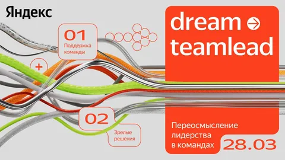

Быть тимлидом очень просто. Знай себе - раздавай подчиненным задачки, а сам стриги купоны. Или нет? (Конечно же - нет)
И кроме технических сложностей, стратегии, принятия технологических решений есть еще большая и сложная часть про пипл-менеджмент. Про управление людьми, развитие команды, принятие сложных managerial decision.
Довольно часто тимлидом становится просто самый толковый или опытный разработчик из команды. Даже если он не умеет лидировать людей, процессы, проекты. Даже если он этого вообще не хотел. Или он просто недооценивал масштаб задач, которыми предстоит заниматься.
Иногда, если не нравится или не получается, лучше это признать и вернуться в роль IC. А иногда можно доучиться и врасти в новую роль. Если вы хотите стать более классным лидером своей команды, заскакивайте на конференцию dream teamlead 28 марта в Москве и онлайн. А если у вас все уже неплохо получается, тоже заскакивайте, в любом случае будет интересно.
Программа делится на два стрима — обсуждаем тимлидство как отдельную профессию и разбираем реальные кейсы, делаем упражнения и отрабатываем управленческие навыки. Подробности тут - https://dream-teamlead.yandex.ru
